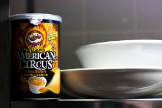

Há cerca de 50 anos, mais ou menos, dois génios apaixonados pelos snacks de trincar e chorar por mais esbarraram com os seus enormes cérebros um contra o outro e criaram um snack à base de batata capaz de revirar cabeças, rebolar os olhos e causar um estouro de sabor na boca. Escapa à rotina de sempre com Pringles. Um snack com a forma do próprio universo, um hiperbólico paraboloide perfeitamente empilhável que se acomoda à língua e faz as delícias do paladar. Nascidas do acaso. Feitas para desfrutar. Uma pitada de seriedade e resmas de curiosidade.
